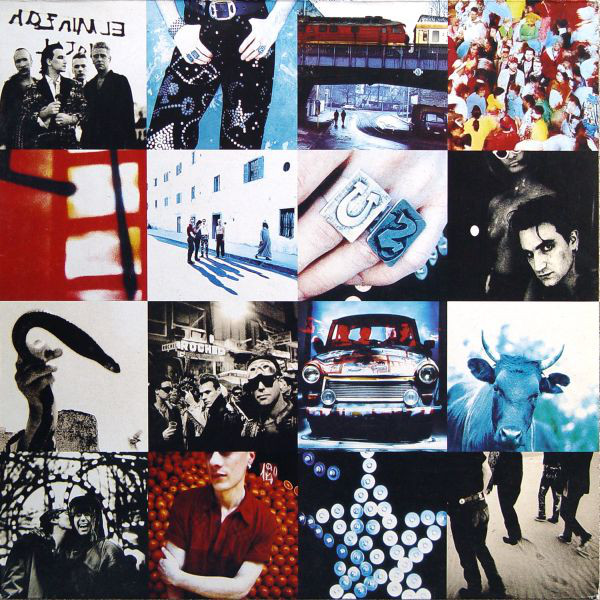
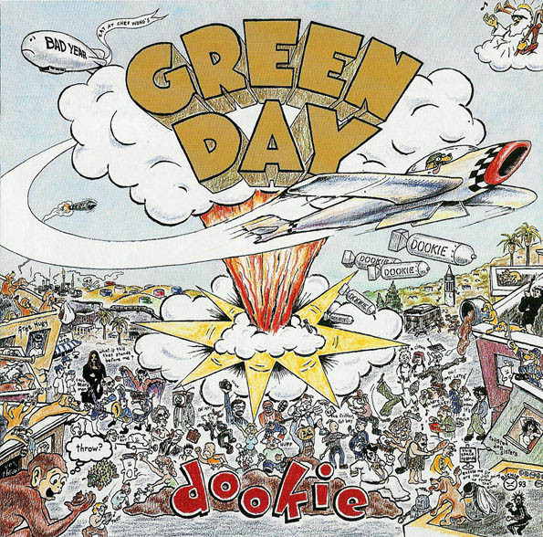

-
AC/DC, The Razors Edge
September 21th, 1990The Razors Edge is the twelfth studio album by Australian hard rock band AC/DC.It was the band's eleventh internationally released studio album and the twelfth to be released in Australia.

-
Guns N’ Roses, Use Your Illusion I
September 17th, 1991
Use Your Illusion I is the third studio album by American rock band Guns N' Roses.s Released the same day as its counterpart Use Your Illusion II. Both albums were released in conjunction with the Use Your Illusion Tour.
-
Red Hot Chilli Peppers, Blood Sugar Sex Magik
September 24th, 1991
Blood Sugar Sex Magik is the fifth studio album by American rock band Red Hot Chili Peppers, released on September 24, 1991. Produced by Rick Rubin, it was the band's first record released on Warner Bros. Records.
-
U2, Achtung Baby
November 18th, 1991 Achtung Baby is the seventh studio album by Irish rock band U2. It was produced by Daniel Lanois and Brian Eno, and was released on 18 November 1991 on Island Records. Stung by criticism of their 1988 release, Rattle and Hum, U2 shifted their musical direction to incorporate influences from alternative rock, industrial music, and electronic dance music into their sound.
-
Green Day, Dookie
February 1th, 1994 Dookie is the third studio album by American punk rock band Green Day, released on February 1, 1994, through Reprise Records.[2] It was the band's first collaboration with producer Rob Cavallo and its major record label debut.
-
Radiohead, OK Computer
June 16th, 1997OK Computer is the third studio album by English rock band Radiohead, released on 16 June 1997 on EMI subsidiaries Parlophone and Capitol Records. The members of Radiohead self-produced the album with Nigel Godrich, an arrangement they have used for their subsequent albums. Other than the song "Lucky", which was recorded in 1995, Radiohead recorded the album in Oxfordshire and Bath between 1996 and early 1997, mostly in the historic mansion St Catherine's Court.
-
Bruce Springsteen, The Ghost of Tom Joad
November 21th, 1995The Ghost of Tom Joad is the eleventh studio album, and the second acoustic album, by American recording artist Bruce Springsteen. The album was released on November 21, 1995, through Columbia Records. The album was recorded and mixed at Thrill Hill West, Springsteen's home studio in Los Angeles, California.
-
Oasis, (What's the Story) Morning Glory?
October 2nd, 1995(What's the Story) Morning Glory? is the second studio album by English rock band Oasis, released on 2 October 1995 by Creation Records. It was produced by Owen Morris and the group's guitarist Noel Gallagher. The structure and arrangement style of the album were a significant departure from the group's previous record Definitely Maybe.
-
Foo Fighters, The Colour and the Shape
May 20th, 1997The Colour and the Shape is the second studio album by American rock band Foo Fighters, released on May 20, 1997 by Roswell and Capitol Records. Produced by Gil Norton, it was the official debut of the Foo Fighters as a band, as their eponymous 1995 debut album was primarily recorded by frontman Dave Grohl and producer Barrett Jones as a demo.
-
Red Hot Chili Peppers, Californication
June 8th, 1999
Californication is the seventh studio album by American rock band Red Hot Chili Peppers.It was released on June 8, 1999,[2] on Warner Bros. Records and was produced by Rick Rubin.